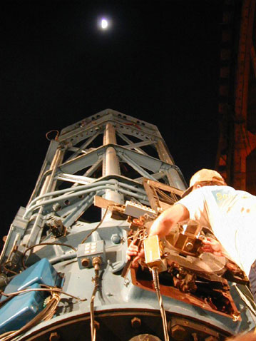

|  |
However, we were also lucky to get a tour of the 100-inch while they were doing double-star analysis in support of the search for extrasolar planets ... this gratis of PJ and The Captain, who were running things that night.
The 100 inch is your basic astronomical spiritual experience.
I've always liked the yoke mount they used, though it cuts off the polar sequence (though not as much as you might think). I've often thought such a mount would be ideal for amateur use ... the idea is to build a true yoke - which supports the telescope both top and bottom and is the most stable configuration other than the currently vogue alt/az -but to make the yoke only large enough to allow the short (back) end of the scope to pass through.
This, of course, means the tube would bump at the top if it were aimed too close to the pole, and making sure you don't is a consideration whenever the scope is aimed near the limit.
An amateur with a smaller scope, however, could just turn it around ...
It runs quietly, and while in operation the dome is dark and ghostly. Everything seems first class, and it's clear this is very much still a working science instrument.
Very little can be seen by the light coming in through the slit, so the scope is more a brooding presence.
But when The Captain has to retask, on come the lights and there simply isn't anything (so far for me) like seeing the scope and dome move.
The illusion when something that big and enveloping turns is that the dome is stationary and you are spinning. Without moving. A bit confusing, but awesome.
But neatest of all is hanging out with PJ in the control room and using the paddle to keep the scope lined up on the target double star. (That night the autoguider failed and she was forced to keep the scope aimed by hand ... within a fraction of an arcsecond. And for a while, that was my job.)
I got to move the 100!
Did a pretty good job, too, I think.
To be even just a tiny link in the chain of history running through that magnificent monster is neatest of all.